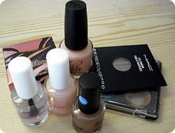
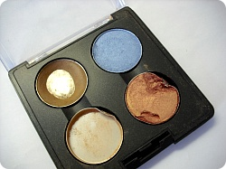
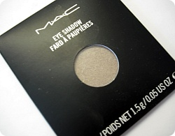
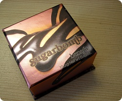
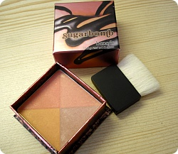
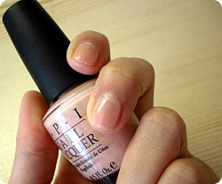
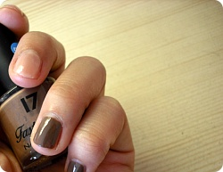

일요일에 이은 이틀연속 런던나들이;;
사실 일욜날 마유코언니를 만난게 전에살았던 Japanses house bill을
7,8월분을 예상액만큼 내고나왔는데
생각보다 적게나와서 돈이 초금 남았다능
남은거 돌려준다고 일욜날 만난건데
영수증+나에게 돌려준돈 까지 깔금하게 책상위에 두고 나왔다능 ㅋㅋㅋ
그래서 월욜날 한번 더 만났다^^;;;
그리구 남는자금이 생기면 얼쑤 좋아라~하믄서
낼름 뭘 지른다^^;;;;;
이것저것 집에필요한거 구입하고
낼름 '지르고는싶은데 막상 사려니 돈아까워'리스트
몇개를 쟁여왔다^^;;;;;

베네피트 블러셔 / 네일몇개 / 맥 섀도

먼옛날 케이스 6개모아오면 립스틱준다는 말에 넘어가서
지른 맥섀도우
(그리고 이런 날 보고 친구들은
'차라리 그냥 립스틱을 하나 사' 라고했당;;; OTL)
아래두개는 면세점에서 구입해서
직원분께 케이스에 넣어달라고 부탁을 못한거라
내가 직접 우겨넣었더니 저렇게 되었음;;
싱글섀도 케이스에서 꺼내는거 왤케 어렵나요;;;;;
나만그런건가?? ㅜㅜ
+
여기저기 굴리다가 왼쪽건 다 부셔져서
제대로 써보지도 못하고 몽땅 실종 ㅡㅜ
두개다 색이 굉장히 맘에 들었는뎅

그래서 이번에 구입한거
이번에도 직원분께 죠기 오른쪽 아래거랑 같이쓰고싶은데
색 추천좀 해주세요~
라고했더니
망설임없이 이걸 골라주셨다능
사실 이것보다 좀더 밝은톤이 끌려서
"이것도 괜찮아보이는데~어울릴까요?"
라고 물어봤더니 너무 단박에 no를 하셔서..OTL
전문가(?)의 말을 따르기로했습니다 녜녜;;
그나저나 이건 아예 4구 케이스에 넣을목적으로
나와있어서 편하군요// 컷터들고 씨름안해도 된다//ㅂ//
(매장에서보면 너무나도 간단하게 '톡' 꺼내시던데
난 왜 안되는거지 ㅡㅜ)


사실 요건 계획에 없었는데
그냥 멍때리믄서 지나가는 날 붙잡아서
이것저것 발라주고 설명해준
매장직원분의 말발에 홀라당 넘어가서 구입한 블러셔^^;;
카리스마 흑인언니 멋졌어요 ㅜㅜ
팔랑귀 팔랑거리믄서~
우왕 하나사면 4개 색이 있네요~섞어서 써도되고
좋아좋아~이러면서 덥석....OTL;;


네일이 죄다 깜장/남색 등 어두운색만 있어서
좀 다른색이 갖고싶어~해서 지른거 두개
+ 나으 다른 매니큐어는 넘 오래되어서 다 굳었거나 한국집에 죄다 두고왔거나...OTL
한국에 두달좀 넘게 머물고 다시오는거라
짐뭐 그까이꺼~얼마 되겠어? 싶어서
출발전 밤12시에 짐싸기 시작했는데 큰캐리 33kg(아시아나서 한 가방당 최대가 32kg이라고 해서
티켓팅하믄서 책몇권뺐다;;;) + 여행가방 10kg정도해서 총43kg 정도 나왔따;;;
오버차지가 일본한번 댕겨올수있는 가격이 나왔는데;; 다행히 그동안 쌓아놓은 포인트덕에
6만원선에서 그쳤다는........OTL OTL
출발직전까지 동생곰과 엄마님에게 욕을 바가지로 먹었음
어째 인간이 나아진게 없냐믄서^^;;;;;
여튼, 예상외로 느므느므 많은 짐때문에
화장 별로 하지도않는데
필요한거 다빼~!! 싶어서 몽땅 두고온것들이
의외로 다 필요하네욤;;; 결국 슬금슬금 사버렸다는
그런 이야기입니당;;녜녜~